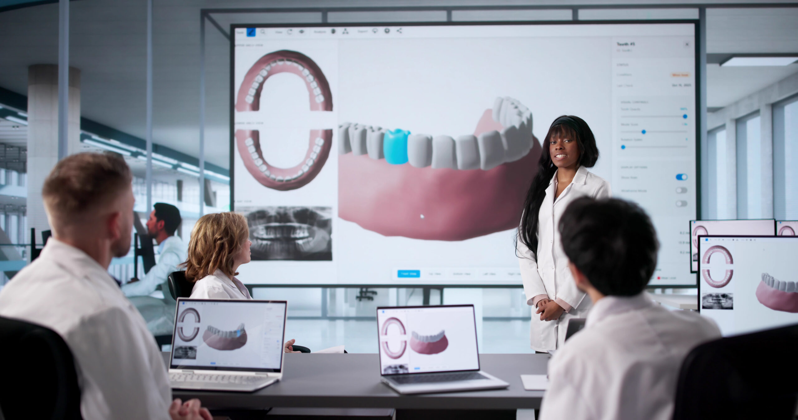

Unlocking Practice Growth: Scalable Solutions for Every Dental Clinic
You’re managing a growing dental practice, but your current tools just can’t keep up. Manual processes and scattered data slow you down and eat into your profitability. Scalable solutions like DentTracks’ AI-powered tools adapt as your practice expands, cutting administrative load and improving efficiency. Let’s explore how smart automation can support real dental practice growth without adding complexity. For more insights on scalability, check out this article.
Scalable Solutions for Dental Growth

Let’s dive into the world of scalable solutions that can transform your dental practice. These tools are designed to grow with your business, making them a perfect fit for expanding practices. They not only streamline operations but also enhance profitability.
AI-Powered Tools in Dentistry
AI-powered tools are revolutionizing the way dental practices operate. Imagine a system that automates scheduling, billing, and patient communication, reducing the time you spend on administrative tasks. DentTracks offers a suite of tools that can do just that. These tools are like having an extra set of hands, allowing you to focus more on patient care. With AI, your practice can identify patterns in patient data to offer personalized care, enhancing patient satisfaction.
For instance, consider an AI system that analyzes appointment trends. It might reveal that most cancellations occur on Mondays. Armed with this insight, you can adjust your scheduling to minimize cancellations, keeping your chairs full. This is just one example of how AI can optimize your practice. Discover more about the benefits of AI in business with this Forbes article.
Enhancing Practice Management
Efficient practice management is the backbone of any successful dental clinic. It’s about having the right systems in place to handle the business side of things smoothly. With DentTracks, you get a platform that integrates all your practice needs into one. Whether it’s managing patient records, coordinating with insurance companies, or tracking financials, DentTracks has you covered.
This integration means less time jumping between systems and more time focusing on what truly matters—your patients. Plus, the intuitive design ensures that even those who aren’t tech-savvy can navigate the platform with ease. This user-friendly approach minimizes the learning curve, so your team can get up to speed quickly.
Boosting Practice Efficiency

Efficiency is key to maximizing your practice’s potential. By automating routine tasks, you can free up valuable time and resources. Let’s explore how automated dental solutions can make a difference in your day-to-day operations.
Automated Dental Solutions
Automating processes like appointment scheduling and reminders can drastically reduce no-shows and last-minute cancellations. With DentTracks, you can automate these tasks, ensuring your schedule stays full and your patients are reminded of their appointments well in advance. This not only improves your practice’s efficiency but also enhances patient satisfaction.
Consider a practice that automated its billing system. They saw a 30% reduction in billing errors, leading to faster payments and improved cash flow. Automation ensures accuracy and consistency, enabling your practice to run smoothly. If you’re curious about how scalable solutions can benefit your business, check out this resource.
Improving Dental Practice Profitability
Profitability is crucial for sustainability and growth. By optimizing operations, you can increase your practice’s revenue without necessarily increasing your workload. Automated solutions can help you achieve this by minimizing overhead costs and maximizing resource utilization.
Imagine reducing the time spent on insurance verification from hours to just minutes. This efficiency allows your staff to focus on patient care, leading to a better patient experience and potentially higher revenue from satisfied clients. DentTracks’ tools are designed to enhance every aspect of your practice, making profitability more achievable.
DentTracks’ Impact on Operations

Adopting DentTracks can transform your practice operations from ordinary to exceptional. Let’s explore how it can streamline patient interactions and simplify revenue management.
Streamlining Patient Interactions
Efficient patient interactions begin with clear communication and seamless processes. DentTracks offers tools that ensure no call goes unanswered and no appointment gets lost. With automated reminders and confirmations, patient interactions become smoother and more reliable.
Imagine a patient receiving a text reminder for their upcoming appointment. This little nudge can significantly reduce no-shows and keep your schedule running smoothly. By incorporating such technologies into your practice, you enhance patient satisfaction and retention. For businesses looking to scale, understanding these dynamics is crucial; read more here.
Simplifying Revenue Management
Revenue management is about ensuring your practice gets paid for the services rendered. With DentTracks, you have tools that track every dollar, ensuring nothing slips through the cracks. Automated billing and collections mean fewer errors and faster payments.
Consider the impact of reducing billing errors by even a small percentage. It translates into thousands of dollars saved annually. DentTracks simplifies this complex process, allowing you to concentrate on providing excellent care. For more strategies on scaling your business effectively, this article offers valuable insights.
In conclusion, adopting scalable solutions like DentTracks can revolutionize your dental practice. By embracing automation and AI-powered tools, you not only boost efficiency but also enhance profitability. It’s about working smarter, not harder, and ensuring your practice is ready for future growth.